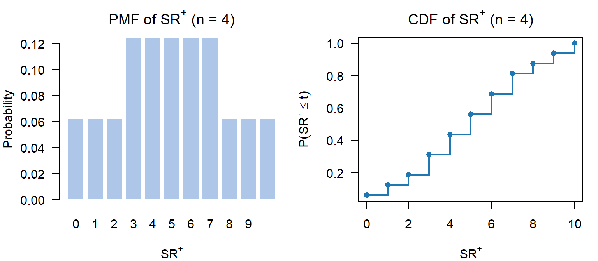
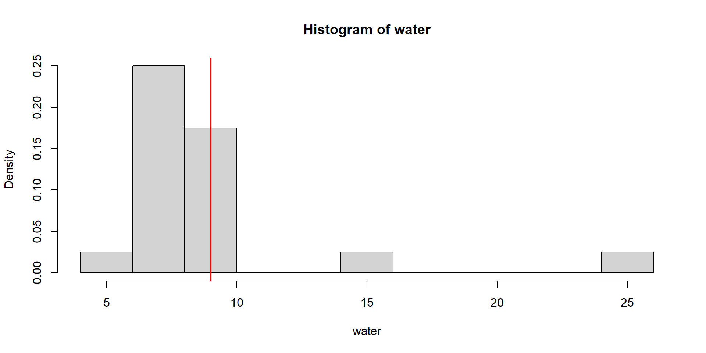
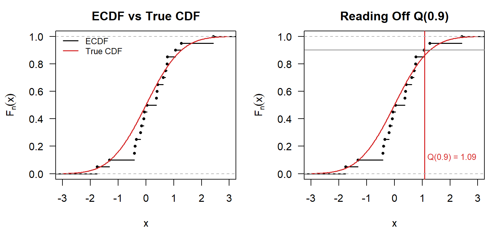
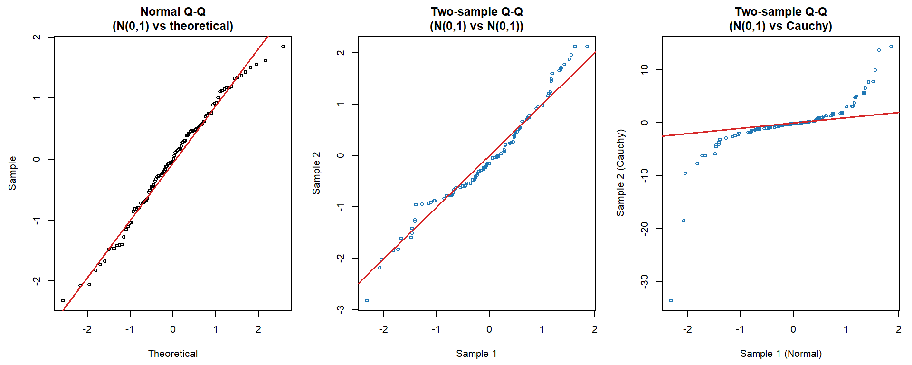
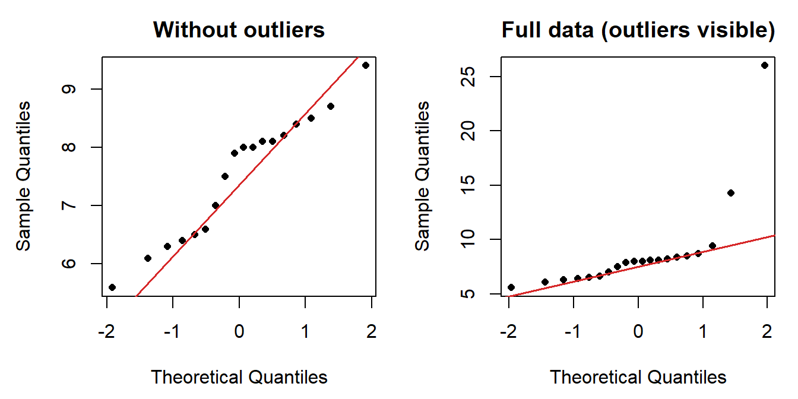

x <- c(1, 1, 5, 5, 8, 8, 8)
theta0 <- 3
d <- x - theta0
cat("Differences d_i :", d, "\n")Differences d_i : -2 -2 2 2 5 5 5 cat("Mid-ranks of |d|:", rank(abs(d)), "\n")Mid-ranks of |d|: 2.5 2.5 2.5 2.5 6 6 6 Nonparametric Tests for Location and Goodness of Fit
2026-02-26
The Wilcoxon signed-rank test is a nonparametric test for a location (centrality) parameter.
It is an alternative to:
Applicable to:
Sample \((x_1, \ldots, x_n)\) from an unknown distribution. Test: \[H_0: \theta = \theta_0 \quad \text{vs} \quad H_A: \theta \neq \theta_0\]
The sign test: Count \(S\) = number of positive values of \((x_i - \theta_0)\).
Reject \(H_0\) if \(S\) is not close to \(n/2\).
Steps:
In R: binom.test(S, n, p = 0.5)
Warning
The sign test completely ignores the magnitudes of the observations — only the signs of \((x_i - \theta_0)\) matter.
This discards information → lack of power.
\[\text{Power} = 1 - P(\text{Type II error}) = \text{ability to detect } H_A \text{ when true}\]
Can we do better?
Wilcoxon’s idea: Use the ranks of \(|x_i - \theta_0|\) along with the signs.
Note
The sign test uses only the signs of \(D_i = X_i - \theta_0\).
The Wilcoxon test uses both the signs and the ranks of \(|D_i|\).
Step 1. Define \(D_i = X_i - \theta_0\), rank the absolute values \(|D_i|\).
Step 2. \(R_i\) = rank of \(|D_i|\) (1 = smallest, \(n\) = largest).
Step 3. Define: \[S_i = \begin{cases} 1 & \text{if } D_i > 0 \\ 0 & \text{otherwise} \end{cases}\]
Step 4. The Wilcoxon signed-rank statistic: \[SR^+ = \sum_{i=1}^{n} S_i R_i\]
\(SR^-\) = sum of ranks for negative differences.
Key identity: \[SR^+ + SR^- = 1 + 2 + \cdots + n = \frac{n(n+1)}{2}\] (knowing one determines the other)
Under \(H_0\): \(SR^+ \approx SR^- \approx \dfrac{n(n+1)}{4}\)
Under \(H_A\): one of \(SR^+\), \(SR^-\) will be large, the other small.
| Alternative | Reject \(H_0\) if |
|---|---|
| \(H_a: \theta \neq \theta_0\) (two-sided) | \(SR^+\) too large or too small |
| \(H_a: \theta > \theta_0\) (upper) | \(SR^+\) too large |
| \(H_a: \theta < \theta_0\) (lower) | \(SR^+\) too small |
The continuity assumption implies no ties in theory. In practice, ties occur.
Solution: Replace ranks with mid-ranks of tied observations.
R applies mid-ranks automatically via wilcox.test().
Objective: Can hypnotic susceptibility be increased with training?
\[H_0: \text{no change} \quad \text{vs} \quad H_A: \text{susceptibility increases (one-sided)}\]
| Subject | \(X_i\) (before) | \(Y_i\) (after) | \(D_i\) | \(R_i\) | \(S_i\) |
|---|---|---|---|---|---|
| 1 | 10.5 | 18.5 | 8.0 | 6.0 | 1 |
| 2 | 19.5 | 24.5 | 5.0 | 5.0 | 1 |
| 3 | 7.5 | 11.0 | 3.5 | 4.0 | 1 |
| 4 | 4.0 | 2.5 | -1.5 | 2.5 | 0 |
| 5 | 4.5 | 5.5 | 1.0 | 1.0 | 1 |
| 6 | 2.0 | 3.5 | 1.5 | 2.5 | 1 |
\[SR^+ = 6 + 5 + 4 + 1 + 2.5 = 18.5, \quad SR^- = 2.5\]
Wilcoxon signed rank test with continuity correction
data: D
V = 18.5, p-value = 0.05742
alternative hypothesis: true location is greater than 0V = 18.5 is \(SR^+\).
p-value \(\approx 0.057 > 0.05\) → do not reject \(H_0\) at the 5% level.
Under \(H_0\): each rank is equally likely to be \(+\) or \(-\) (prob \(1/2\)), independently.
For sample size \(n\): there are \(2^n\) equally probable sign assignments.
Example, \(n = 4\): \(2^4 = 16\) equally probable arrangements, each with probability \(1/16\).
\[P(SR^+ = k) = \frac{\#\text{ arrangements with } SR^+ = k}{16}\]
For example:

Figure 1
psignrank() in R [1] 0.0625 0.1250 0.1875 0.3125 0.4375 0.5625 0.6875 0.8125 0.8750 0.9375
[11] 1.0000The table size grows as \(2^n\) — for larger \(n\), use:
wilcox.test() (exact, any \(n\))Under \(H_0\), \(T = SR^+\) (or \(SR^-\)) is approximately normal:
\[\mu_T = \frac{n(n+1)}{4}, \qquad \sigma_T = \sqrt{\frac{n(n+1)(2n+1)}{24}}\]
Standardise: \[Z = \frac{T - \mu_T}{\sigma_T} \xrightarrow{d} \mathcal{N}(0,1)\]
Use pnorm() to compute p-values.
FVC (Forced Vital Capacity) = volume of air expelled from the lungs in 6 seconds — progressively reduced in cystic fibrosis patients.
Research question: Does a new experimental drug reduce the rate of FVC deterioration?
Design: Matched-pair study.
Large \(SR^+\) (small \(SR^-\)) → drug is effective.
| Subject | Placebo | Drug | \(x_i\) | Rank | \(SR^+\) | \(SR^-\) |
|---|---|---|---|---|---|---|
| 1 | 224 | 213 | 11 | 1 | 1 | NA |
| 2 | 8 | 95 | -87 | 3 | NA | 3 |
| 3 | 75 | 33 | 42 | 2 | 2 | NA |
| 4 | 541 | 440 | 101 | 4 | 4 | NA |
| 5 | 74 | -32 | 106 | 5 | 5 | NA |
| 6 | 85 | -28 | 113 | 6 | 6 | NA |
| 7 | 293 | 445 | -152 | 7 | NA | 7 |
| 8 | -23 | -178 | 155 | 8 | 8 | NA |
| 9 | 525 | 367 | 158 | 9 | 9 | NA |
| 10 | -38 | 140 | -178 | 10 | NA | 10 |
| 11 | 508 | 323 | 185 | 11 | 11 | NA |
| 12 | 255 | 10 | 245 | 12 | 12 | NA |
| 13 | 525 | 65 | 460 | 13 | 13 | NA |
| 14 | 1023 | 343 | 680 | 14 | 14 | NA |
\(SR^+ = 86\), \(SR^- = 19\)
Mean = n(n+1)/4 = 52.5SD = sqrt(n(n+1)(2n+1)/24) = 15.92953z = (19 - 52.5) / 15.92953 = -2.1030p-val = P[Z <= -2.1030] = 0.0177p-value \(< 0.05\) → reject \(H_0\): the drug is effective.
psignrank()wilcox.test(x, alternative = ...)| Method | Assumptions | Power |
|---|---|---|
| Sign test | i.i.d., continuous | Lowest |
| Wilcoxon signed-rank | i.i.d., continuous, symmetric | Intermediate |
| t-test / z-test | i.i.d., normal | Highest (under normality) |
Important
Symmetry is fairly restrictive. A serious violation invalidates the Wilcoxon test, but the sign test remains valid. Use Q-Q plots to assess symmetry!

Now, let’s compare the p-values for the three tests we have learned so far: Sign test, Signed-rank test and t-test.
Recall that a low p-value is considered evidence against the null hypothesis.
[1] 0.01773822[1] 0.002576828[1] 0.8270349Wilcoxon & sign test reject; t-test does not (p ≈ 0.83).
Outliers (14.3, 26.0) inflate \(s^2\), masking the signal in the t-test.
The quantile \(Q(p)\) for probability \(p \in (0,1)\): \[Q(p) = F^{-1}(p) = \inf\{x : F(x) \geq p\}\]
| CDF | Quantile function | |
|---|---|---|
| Population | \(F(x) = P(X \leq x)\) | qnorm(), qt(), … |
| Sample | \(F_n(x) = \frac{\#\{X_i \leq x\}}{n}\) | quantile() |
Key result: \(F_n \to F\) uniformly (Glivenko–Cantelli theorem).
Scaled deviation \(\sqrt{n}\sup_x |F_n(x) - F(x)|\) converges to the Kolmogorov distribution.

Figure 2
For sample \(x_1, \ldots, x_n\): plot sample quantiles against
Points along the diagonal → consistent with the hypothesized distribution (or same distribution for two samples).
In R:
qqnorm(x); qqline(x) — test normalityqqplot(x, y) — compare two samples
Figure 3
Right panel: Cauchy is heavy-tailed → extreme deviation from the diagonal.
Q-Q plots are also a natural tool for checking symmetry — the key assumption of the Wilcoxon test.
x2 <- c(5.6,6.1,6.3,6.4,6.5,6.6,7.0,7.5,7.9,
8.0,8.0,8.1,8.1,8.2,8.4,8.5,8.7,9.4,14.3,26.0)
par(mfrow = c(1, 2), mar = c(4.5, 4.5, 2.5, 1))
qqnorm(x2[-c(19,20)], main = "Without outliers", pch = 16, cex = 0.8)
qqline(x2[-c(19,20)], col = "#d62728", lwd = 1.5)
qqnorm(x2, main = "Full data (outliers visible)", pch = 16, cex = 0.8)
qqline(x2, col = "#d62728", lwd = 1.5)
Q-Q plots are a visual diagnostic tool.
The next module covers formal goodness-of-fit tests:
Key question for today’s material:
Given the water content data, which test is most appropriate and why? Consider the role of the symmetry assumption and what the Q-Q plot tells you.
Lecture 7 — Wilcoxon Signed-Rank Test & Q-Q Plots